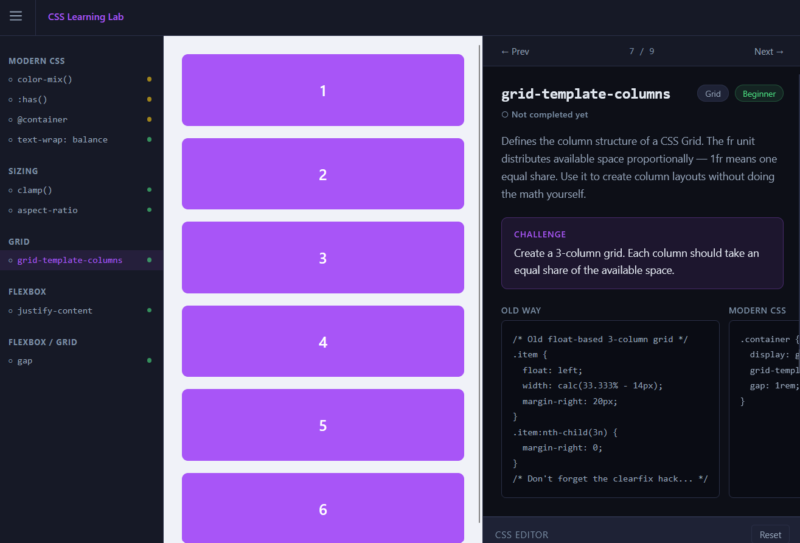
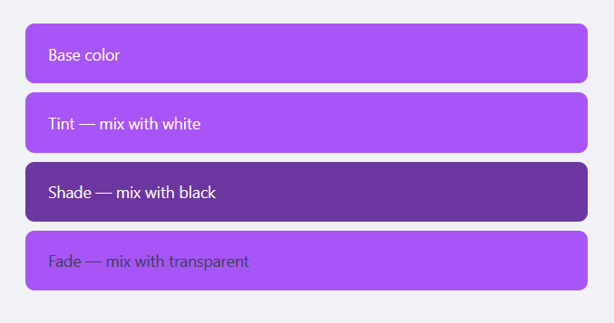
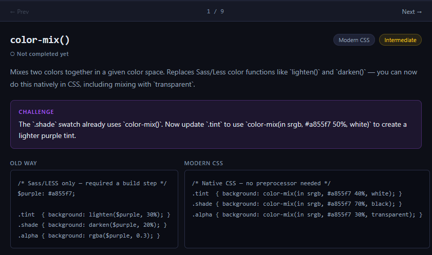
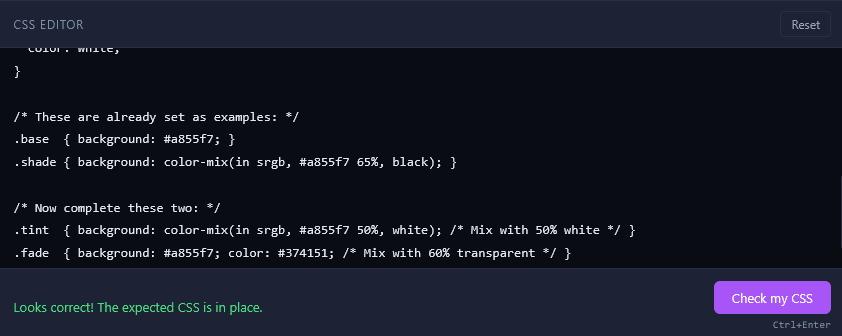
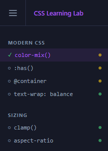

CSS Learning Lab

CSS Learning Lab is a single-page, split-screen learning app with a live canvas on one side and a lesson panel on the other. A collapsible sidebar organizes lessons by category, with difficulty indicators and completion tracking so you always know where you are.
Purpose
I built it after filling out the annual State of CSS survey and realizing I was selecting 'Never heard of' more than I'd like. Using Tailwind at work had made me comfortable, but at the cost of keeping up with what vanilla CSS can do on its own.
There are plenty of ways to stay current — podcasts, tutorials, articles — but I find it easy to forget things I've learned passively without a chance to apply them right away. I wanted something interactive and low-friction, where I could read a short explanation and immediately try it out.
Design decisions
The goal was to make something interactive and quick, with digestible lessons that could be generated easily. It also needed to be something I could create fast, since the whole point was to help myself learn.
One option was a quiz-style game with a canvas that updated based on multiple-choice selections. Straightforward to code, but I didn't like the lack of interactivity — you could see the changes, but you weren't typing any code.
The stronger inspiration was Flexbox Froggy: a small description of the concept, a place to type, and a visual that responded to your input. What I didn't want was to spend time planning out levels or building a cohesive game narrative.
The final plan borrows from Flexbox Froggy's format, but structured closer to freeCodeCamp — a live canvas on one side, with the lesson and text editor together on the other. The goal was the same as those tools: a quick overview and a chance to tinker, without overwhelming the user with information.
Data-driven architecture
Lesson data is stored in JSON files that include everything needed to render a lesson: the content itself and what the app needs to display it. The JSX lesson component renders whatever is in the JSON, so we don't need a new React component for every lesson — just a standard set of properties and a single renderer.
This also makes AI-generated lessons simple: just produce a JSON file. It separates concerns into *content* and *rendering*, and makes the app easy to extend to dozens or hundreds of lessons.
JSON files are discovered by Vite using `import.meta.glob`, which scans the content folder at build time and creates imports automatically. Add a new JSON file, rebuild, and it's ready.
AI Workflow
A secondary purpose of this project was to test an AI coding workflow with Claude Code. Rather than typing prompts into chat, I kept my preferences, coding standards, project spec, and feature notes in versioned markdown files that I could point the AI to each session. This kept context from getting lost and meant I didn't have to re-explain myself every time. Using AI here let me hit my main goal — building something useful quickly — without spending weeks doing the research myself.
Features/constraints
The app is a split-screen CSS sandbox. The left side is a live canvas — an iframe that renders lesson HTML and reflects CSS changes in real time.

The right side holds the lesson panel: a short explanation of the CSS property, an old-way vs. modern-way code comparison, a textarea editor pre-filled with starting CSS, and a challenge prompt.


A collapsible sidebar groups lessons by category with difficulty indicators and completion checkmarks. Prev/Next buttons let you move through the lesson sequence.

Users can check their code for correctness; if correct, the lesson is marked complete. Progress is stored in local storage and persists between sessions. On completion, some lessons show a See Other Solutions button with alternative modern approaches to the same challenge.
Two constraints shaped the build: no backend, and no CSS libraries.
A backend would overcomplicate things — there's no API to connect to, no database needed, and JSON content is already compact. For styling, using a CSS library felt counterintuitive for an app whose purpose is to learn vanilla CSS. It also means fewer packages to maintain, and now that the bulk of the app is built, any changes I make give me a chance to practice what I'm learning.
Next Steps
The app currently has a small set of lessons, with more planned. The immediate next step is generating additional content across more CSS categories. Longer term, a debug-style challenge mode — where users fix a broken layout using the concepts they've learned — could add a useful second mode of practice beyond the current build-from-scratch format.